전체 할 일0
YOUR DAILY SPACE
설은아 작은 한 걸음이
멋진 하루를 만들어요.
해야 할 일을 정리하고, 하나씩 가볍게 완료해 보세요.

완료했어요0
남은 할 일0
MY CHECKLIST
나의 할 일
아직 등록된 할 일이 없어요.
위 입력창에 오늘 할 일을 적어보세요!
입력한 내용은 이 브라우저에 자동 저장됩니다. 오늘도 충분히 잘하고 있어요 ☁